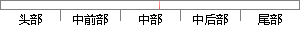

。物体的红外辐射特性、辐射能量的大小
片段位置图

相似结果
相似片段：
备在线故障诊断、安全保护以及节约能源等方面发挥了正在发挥着重要作用。 一切温度高于绝对零度的物体都在不停地向周围空间发出红外辐射能量。物体的红外辐射特性一辐射能量的大小及其按波长的分布一与它的表面温度有着十分密切的关系。因此,通过对物体自身辐射的红外能量的测量，便能准确地测定它的表面温度，这就是红外
| 对比库： | WriteCheck云资源库 |
| 来源： | www.dianzujidi.cn 查看来源 |
| 发布时间： | 2013-07-02 |
| 相似率 | 100% （严重抄袭） |